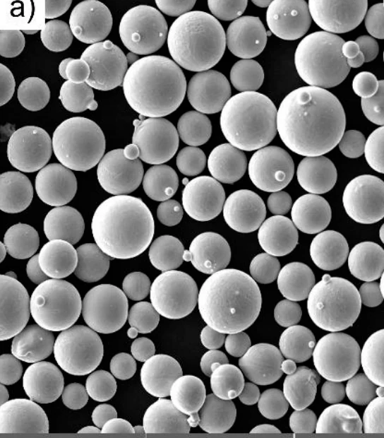
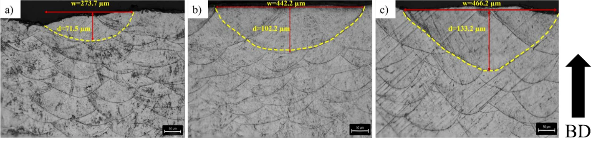
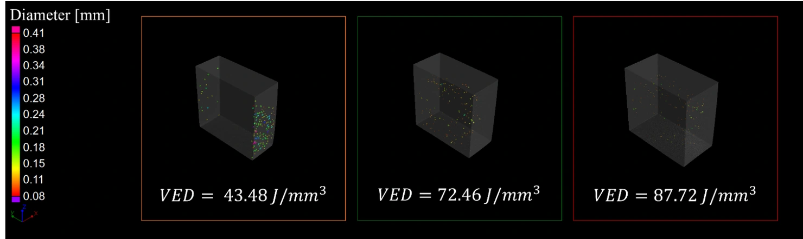
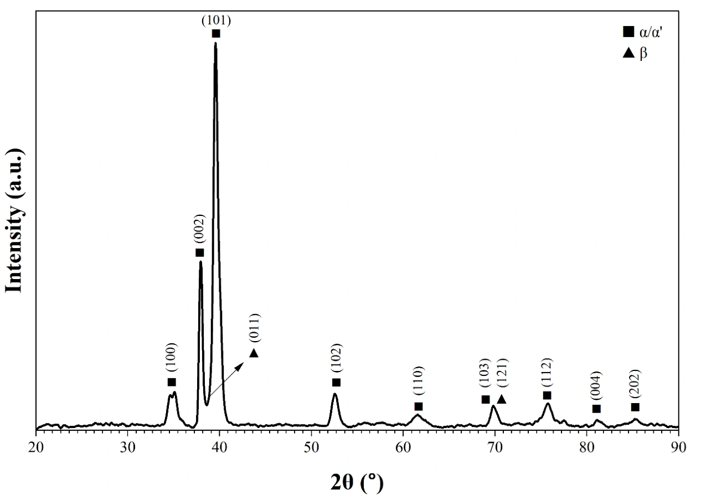
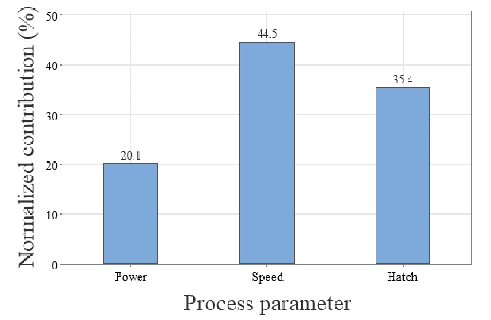

Process optimisation and materials characterisation across 27 tested conditions.
Institution
Politecnico di Torino
Period
September 2025 to July 2026
Introduction
How should laser power, scan speed and hatch spacing be chosen to build dense Ti-13Nb-13Zr parts with a smooth as-built surface?
This thesis investigated the processability of the near-beta titanium alloy using Laser Powder Bed Fusion (LPBF). I compared density and surface roughness across 27 conditions and examined melt-pool geometry, internal defects and local mechanical response in three representative specimens.

Starting material. Scanning electron microscopy (SEM) shows the predominantly near-spherical Ti-13Nb-13Zr particles used as feedstock.
Method
I compared relative density and surface roughness across 27 LPBF conditions. Three specimens were selected to represent low, intermediate and high volumetric energy density (VED) in the tested range. S22 was also selected for elemental mapping and phase identification.
Process settings for the three selected specimens
Specimen
Laser power (W)
Scan speed (mm/s)
Hatch spacing (mm)
VED (J/mm³)
S03 Low VED
180
1,200
0.115
43.48
S22 Intermediate VED
200
800
0.115
72.46
S27 High VED
200
800
0.095
87.72
VED is laser power divided by the product of scan speed, hatch spacing and layer thickness. The layer thickness was 30 µm for all three specimens.
Measurements
I measured relative density by the Archimedes method and recorded two stylus roughness profiles per specimen. I used optical microscopy and ImageJ to quantify melt-pool width and depth.
Laboratory data
I interpreted supplied X-ray computed tomography (XCT), SEM with energy-dispersive X-ray spectroscopy (EDS) and nanoindentation data. I indexed supplied X-ray diffraction (XRD) peaks in HighScore Plus.
Statistical analysis
I fitted a second-order regression in Minitab to the Archimedes relative density data for all 27 conditions and examined process parameter contributions and interactions.

Optical microscopy. Etched cross-sections of S03, S22 and S27 from left to right. The marked boundaries show where melt-pool width and depth were measured in ImageJ.

X-ray computed tomography. The three volume renderings show where detectable internal defects were located in S03, S22 and S27, from left to right. Colours encode detected defect diameter in millimetres.

X-ray diffraction of S22. The indexed peaks are dominated by α/α′ titanium. Weak, overlapping features are consistent with a minor retained β contribution.

Normalised contributions. The bars show the relative contributions of the three process parameters in the density analysis across 27 conditions.
Relative density regression
Scan speed ranked first (44.5%), followed by hatch spacing (35.4%) and laser power (20.1%). These are normalised contributions within the tested process window. Scan speed changes the laser–material interaction time, while hatch spacing changes the overlap between adjacent scan tracks. Both mechanisms can influence consolidation. The laser power × scan speed interaction (p = 0.044) indicates that the fitted effect of power varied with scan speed. Different parameter combinations can therefore warrant separate evaluation even when their VED values are similar.
The model had an R² of 58.29%, an adjusted R² of 36.21% and a predicted R² of 0.00%. The fitted model describes trends in the tested conditions. The predicted R² provides no evidence that the model can predict density reliably at untested settings.
Results
S22 was selected for detailed characterisation. It achieved the highest measured relative density across all 27 conditions and the lowest XCT-detectable defect-volume fraction among the three scanned specimens.
S22 at a glance
Archimedes relative density
99.55%
XCT-detectable defect-volume fraction
0.0187%
Dominant XRD phase Possible minor retained β
α/α′-Ti
The XCT fraction describes defects detectable at the chosen scan resolution and segmentation threshold. It measures a different quantity from the density deficit inferred from the Archimedes result. Overlapping XRD reflections limit discrimination between α and α′, and the weak β features support a qualitative phase assignment.
Surface finish and densification
S22, at 72.46 J/mm³, had a mean surface roughness (Ra) of 2.11 µm. S27, at 87.72 J/mm³, produced the lowest Ra (1.60 µm). The preferred setting therefore depends on whether the priority is densification or as-built surface finish.